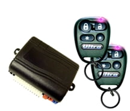

-
I just wanted to cover some basics I found when I installed my remote starter + keyless today. At this time I have an automatic so I will be touching on the manual stuff, but not really covering it.
The system I chose is the UltraStarter 1250. It can handle relays for multiple functions(trunk or fuel latch, door) and obviously the 12v relays for ignition and accessory. I've looked through their documentation and it seems all their units use the same 13-14 pin harness + 6 pin harness. Their six pin harness has 5 important pins on it. For those who don't know, the first color is the primary. This means that the wire is mainly that color, with a stripe or dot of the second color.
Six Pin layout:
Pin 1 - Yellow - 12v 30a Output for Starter
Pin 2 - Green - 12v 30a Output for Accessory/Heater
Pin 3 - Red - 12v 30a Input(needs to be constant)
Pin 4 - Red - 12v 30a Input(needs to be constant)
Pin 5 - White - Selectable Output(the unit can be programmed to put out another 12v 30a lead, I didn't need it)
Pin 6 - Blue - 12v 30a Output for Ignition
Fourteen Pin layout(mostly for relay):
Pin 1 - Yellow - Factory Re-arm Output (I haven't messed with this yet because I believe I need another relay to trigger the re-arming)
Pin 2 - Red/White - Trunk release (I might get another actuator to pull the trunk in the future, but for now it's just an extra relay trigger)
Pin 3 - Brown - Factory Disarm Output (See re-arm)
Pin 4 - Orange - Starter kill & Anti-grind (at this time I haven't really read into the value of this)
Pin 5 - White/Blue - Horn honk output
Pin 6 - Black/White - Negative Parking Brake Input(Manual trans only)
Pin 7 - Purple - Positive Door Pin Input(Manual trans only)
Pin 8 - White - +10 amp output to Parking Lights - (Necessary to program the device, and have them flash on locking)
Pin 9 - Green/White - Hood Pin Switch Input (checks for hood closure)
Pin 10 - Green - Negative Door Pin Input(Manual trans only)
Pin 11 - Black - Ground
Pin 12 - Pink - Brake Switch Input(Security feature to stop driving without the key in)
Pin 13 - Blue/White - Tachometer Detection, needed for the computer to understand that the car itself is running.
Pin 14 - Blue - Diesel Glow Plug Input
I know most of this information is specific to the manufacturer, but I've looked at a few of these units now and come to the conclusion that I like these the best. They have all the leads I would ever need, as well as providing flexibility in one unit to handle an AT/MT car. The only downside so far is the shortness of the 30amp wires. They're about 2 feet long, and inhibit a great deal of options for remote starter location. I've also found multiple websites giving bad information on the stock 300zx wiring harness pinout. I can't say for sure what difference there is between digital models, but what they had was blatantly wrong in some parts. I checked other distributor materials and came to the same conclusion. That's the main reason I am posting this.
I should also add that wiring a killswitch or just a general rocker switch and push button start could be done with these leads off the ignition harness.
300zx Wiring Harness info:
Here's the fun part of the information that's the most valuable. I am listing the leads I didn't connect up at the bottom of this section.
The first four are found in the ignition harness to the right and below the steering wheel. It should look like the biggest harness there. I had some difficulty getting to the harness itself, so be careful not to pull a pin out of the socket in the harness. When connecting the new 6 pin harness to this one, you are going to want to splice connections in. This is different than just cutting a wire in half and connecting one end. You need to get a wire tap to connect the existing wire to the new one. These can be found at just about any hardware store, and may require a crimping tool. If you don't splice your regular key ignition won't work anymore.
Constant 12v Source - White/Blue - (For Pins 3+4 on the 6 Pin connector)
Ignition Lead - Black/White - (For Pin 6 in the 6 Pin connector)
Accessory/Heater Lead - White/Purple - (for Pin 2 in the 6 Pin connector)
Starter - Yellow - (For Pin 1 in the 6 Pin connector)
The parking light lead on the 14 pin connector needs to be connected to the light switch harness connected to the bottom left of the steering wheel. Again, we are splicing and not cutting the existing wire because we still want the switch to work.
Parking Lights - Red/Green - (For Pin 8 in the 14 Pin connector)
The Tach sensor wire is another one all to itself. It should be(assuming digital+analog wiring is the same) on the left 'wall' of the drivers area. Again, we are splicing because we don't want to break the existing tach. This area was a bit tight, so I opted to cut the wire and extend it a bit. If yours has more room, I would just try to splice.
Tach Sensor - Yellow - (For Pin 13 in the 14 Pin connector)
I didn't set up the brake sensor just because it was another wire I had to deal with, and isn't terribly necessary. However, you should be able to find it above the brake pedal near the switch for the lights.
Brake - Blue/Yellow - (For Pin 12 in the 14 Pin connector)
The horn switch is also pretty simple to find, again we are splicing to save the existing system. I don't remember exactly where it is, but it should be connected to the steering column.
Horn - Blue/Orange - (For Pin 5 in the 14 Pin connector)
The last thing I am connecting to is the factory disarm lead. I am not entirely certain whether this needs a relay or not between the computer and it, so I haven't connected it yet. However, you should be able to find it in the driver side kick panel.
Factory Disarm - Red/Blue - (For Pin 3 in the 14 Pin connector)
From here on out, these are the pins I didn't connect.
Pin 1 on the 14 Pin connector: Unnecessary considering the locking of the door triggers the re-arming process. However, the system can force a re-arm if you connect this to the Red/Green or Red/Grey wire in the drivers side kick panel.
Pin 2 on the 14 Pin connector: I don't have a second actuator for this, so I haven't connected it. I will be adding one in the future however. This could also be used for the fuel door, or if you shave a door handle in the future. This could also possibly be used for any manner of relay uses, including window opening/closing, heat adjustment, even turn signals, emergency flashers, and manual horn operation.
Pin 4 on the 14 Pin connector: I have no idea what to do with this yet.
Pin 6 + 7 + 10 on the 14 Pin connector: Used for the manual trans models.
Pin 9 on the 14 Pin connector: Who cares? I'm going to be in the car before it's rolling.
Pin 14 on the 14 Pin connector: I haven't switched to diesel yet.
Installing the actuators:
The first step is to remove the door panel. To do this, follow the instructions listed on this site.
Once the door panel and plastic cover is removed, we need to figure out position for the actuator. For me, the best place seemed to be on the rear side of the door on the inside. Due to the positioning of the guide for the window, and the availability of holes to work with, there really is only one place to add the actuator.
ctuator/location.jpg" alt="" />
From here, I chose to mark the location for the two holes with a nail to scratch the paint using the actuator on the outside of the door. I then drilled the holes and moved the actuator to the inside of the door. From there it was as simple as lining it up and screwing it in.
The next part seems to be the most painful, and requires the locking mechanism to actually be working at this point. The easiest method is to set the actuator to the unlock position. Once there, bend the rod on the actuator to fit the existing lock rod. This might take some time to get just right, but if you don't it will make the lock much more stiff and wear out the actuator. Once you get a good fit, again set the actuator to be unlocked to make sure you didn't move it at all. Once that is done use the existing connector to link the two rods together. Use bolt cutters, or whatever else you have that might work to cut the excess actuator rod from the top of the connector. This will stop it from jamming against the rod above.
You should be all set at this point, but if you're smart and haven't done so already, you will want to take this opportunity to change out the speakers, or remove that nasty tint.
[Will be filled in more at a later time] -
Keep it up. I'd also like a video.
-
I will be adding soon as I will be installing this on a manual vehicle soon. Unfortunately between getting back to work after vacation, and working on the boards, I'm just about intellectually spent right now. -
Nice information on a subject that usually isn't mentioned here. Do you get a remote of some kind with this unit?… I've never really seen remote starting before. -
The unit I got has some really nice 'basic' looking keyless entry/remote start remotes. The problem I found with most remote starting units was the remote was always so damn huge, or so damn ugly. The ones I got almost look like they are a standard feature.William86Turbo wrote: Nice information on a subject that usually isn't mentioned here. Do you get a remote of some kind with this unit?… I've never really seen remote starting before.
 -
Good Info. Thank you very much.
Perfect timing too, i just pulled out my old viper300 alarm
and am planning to install it with remote entry/hatch actuators.
For the door switches, instead of installing seperate pin switches,
i had considered using the switched signal to the red door lights. They're not
connected to the dimmer circuit and should provide a clean on/off signal.
Can you sticky your post?
84 AE/Shiro #683/Shiro #820/84 Turbo -
Looks nice! This would certainly make the whole Z31 experience much less tedious. -
Justin, you made it look so simple. I can't wait to install the keyless entry on my Z.
Really? It's probably close to the #1 aftermarket accessory around here. Very handy in winter months, but that's about it IMHO. I think about 70% of the people I know have remote start on their cars. Most new cars can get them factory or dealer-installed as an option.William86Turbo wrote: I've never really seen remote starting before. -
Remote start is not something needed here, but I like to install the viper 5900 that has remote start cause it has a 2 way paging system with a one mile range.Chuck Stong
300+ Parts and Performance owner
http://www.300-plus.com
2002 ZCOT president and always active member -
i had an eclipse with remote start.
i used it in the winter and summer.
just set you AC to freezing. as you are getting ready to leave work. hit the button about 5 minutes before you take off. go out to the car and its nice and cool.
i had it back in 97 on my car. it wasn't very common. it was funny to start it up when people were walking by. they would poop thier pants when they didn't see anyone in the car. :lol: my system had a very long range as well. -
Yeah, Most of our new cars have it, its just something I've never considered really. I like the idea of keyless entry and locking. But I like to turn the key damn it! haha :-DJason84NA2T wrote:
Really? It's probably close to the #1 aftermarket accessory around here. Very handy in winter months, but that's about it IMHO. I think about 70% of the people I know have remote start on their cars. Most new cars can get them factory or dealer-installed as an option. -
Anyone have pics of actuators in the doors ? I'm think of trying this … also this is an old thread … what product to go for … -
yeah…holy ancient post Batman
You can get generic geared actuators that have a clamp to attach them to the lock/unlock shaft. That's what was (possibly still is) commonly used in aftermarket alarm systems back in the day.
84 AE/Shiro #683/Shiro #820/84 Turbo -
Also it seems to me , could you just put an actuator on the drivers side since if you manually ( with the key) unlock the drivers side it electronically unlocks the passenger side … hmmm -
Oh yeah…derp. you could just do that. Attach one on the key activated unlock rod, so it doesn't trip the factory alarm, if it is still connected that is.
Good idea!
84 AE/Shiro #683/Shiro #820/84 Turbo

Copyright © 2006–. All rights reserved. Privacy Policy